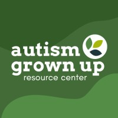

Projects
Below is all the work experience Liam has accumulated over the years, from jobs and internships, to projects both commissioned and independent.
 |
Con EdisonAt this internship, I was put on a team developing a web app. The web app desired was a highly-interactive onboarding portal for new recruits and interns alike. Con Edison has numerous in-house Large Language Models (LLMs) available, so I prompted numerous prototypes with the assistance of GPT5, Claude 4 Sonnet, Gemini 2.5 Pro, and DeepSeek R1 0528. The prototypes were stylistically consistent with the other web apps ConEd has, and all had unique ways of displaying information. I passed on this project to my teammates, who would survey others on what prototype has the best layout to make the final web app be the best it can possibly be. |
Logo still in progress |
Tech Unlimited's (Formerly Known As TechKids Unlimited) New websiteI was in charge of developing a new website for Tech Unlimited. I used Canva to make low-level wireframes for the website, making a blueprint of sorts to help web developers make the website the best it can be. |
Disability Doula WebsiteThis is a website for the Disability Doula, a initiative set up by the Brooklyn Law School to better serve those who are pregnant and have developmental/intellectual disabilities. I was put in charge of the website's layout, utilizing SquareSpace, HTML, CSS, and JavaScript to ensure the website is accessible, adaptable, and aesthetically exceptional. |
 |
PC Build For ClientThis is a high-end desktop PC I built for my client. It consists of an AMD Ryzen 7 7800X3D CPU cooled by an Arctic Liquid Freezer 3 420mm AIO liquid cooler, an AMD Radeon RX 7900XTX GPU, and 64gb of DDR5-6000 RAM with a CAS latency of 30. It is intended for high-end 4K gaming and 3D rendering. My client chose the components under my advisement, and I helped them put together the PC. I also set up their dual 4K monitors used for productivity. |
 |
PC Build For ClientThis is a mid-range desktop PC I built for my client. It started off with an AMD Ryzen 5 1600 cpu cooled by it's stock cooler, 16GB of DDR4-3200 RAM with a CAS latency of 16, and an Nvidia GeForce GT 730 GPU. The client wanted the build to cost $500, and at the time of building, PC components (namely GPUs) were expensive, hence the low specs. A few years later, my client did buy a Nvidia GeForce RTX 3060 Ti, and I replaced the GPU for them. The build is intended for streaming video game consoles, but eventually wanted to do 1080p gaming, hence the eventual GPU upgrade. I also helped my client set up their streaming setup, ensuring an environment that is both ergonomic and spacious. |
PlayStation 4 Console Repair For ClientA client wanted me to repair their PlayStation 4 console. They were having issues with the functionality of the optical disk drive, and knew of my experience in hardware repair. I disassembled the console using a security torx screwdriver, and dusted off the internals with compressed air while I was troubleshooting the issue. I got to the optical disk drive, disassembled it, cleaned off some components with isopropyl alcohol, and reassembled the disk drive. After giving the optical disk drive the proper care it needed, I reassembled the console, and powered it on. Using a Blu-Ray disc, I verified the functionality of the disk drive, confirming a successful repair and a joyous client. |
|  | Autism Grown UpThis was an internship I did remotely. My tasks involved helping Autism Grown Up get their podcasts onto YouTube. I wrote transcripts for podcasts made by Autism Grown Up using Google Docs, typing up accurate and legible subtitles to help those hard of hearing enjoy the podcasts. I created thumbnails for podcasts made by Autism Grown Up to be posted on YouTube using Canva, making thumbnails consistent with their branding. I even edited podcasts made by Autism Grown Up to be uploaded on YouTube by using Vegas Pro Edit, making the podcasts fit in a format suitable for the video-sharing platform. |
A video about John Romero's DaikatanaThis was a mini documentary I made one year at TechKids Unlimited. Using Adobe Premeire to edit the video and Adobe Illustrator for some of the visuals, I created a mini-documentary on the video game Daikatana. It is an entertaining and informative video documenting the troubled development of a game by one of the developers of Doom, Quake, and Wolfenstein 3D. The video can be watched |